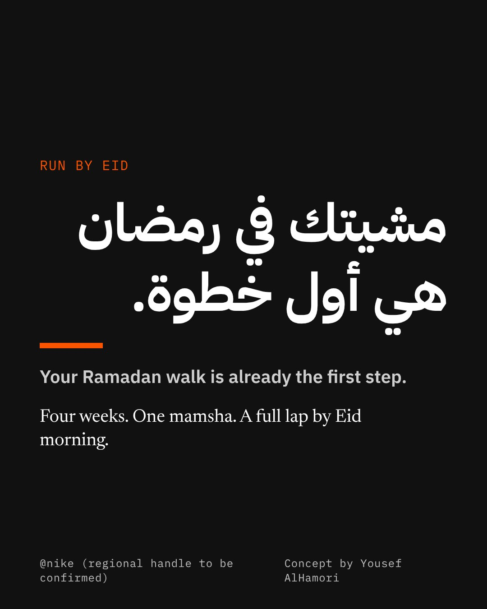
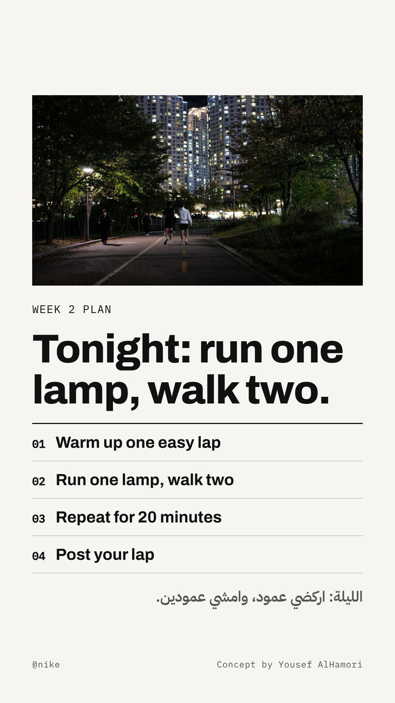
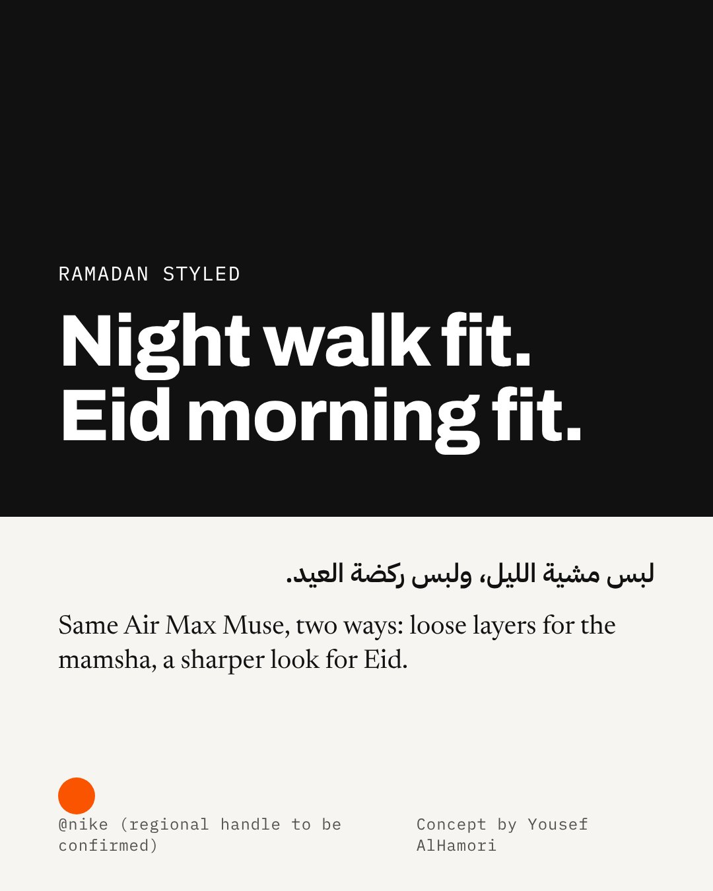

كل ليلة تمشين؟ هالمرة خلي المشي بداية. خطة أربع أسابيع من المشي للركض، تنزل كل أحد. اركضي قبل العيد. #اركضي_قبل_العيد #RunByEid #Nike
Run by Eid plan pillar: launch post that names the habit she already has and invites her to start.
Girls already walk every Ramadan night. Run by Eid turns that walk into running.
Run by Eid is a four week walk to run plan built for girls and young women, launched on the neighborhood mamsha after taraweeh. It carries the What If You Can? Story into a habit people can start tonight, with modest activewear styling from the Style By Ramadan edition. The content is Arabic first, made for local feeds, and built around real progress people can post.
Unsolicited concept for portfolio purposes. I am not affiliated with Nike; its name and trademarks belong to the brand. Facts in the audit come from the public sources listed at the bottom. Targets are proposed, not actual results.
Three posts from the campaign, each with the caption as it would go out and the job it does. Photos are free stock images from Unsplash, standing in for a real shoot.



What the brand already does well on social, and the openings this plan goes after.
Get 2,000 girls and women to post a tagged walk or run during Ramadan 2027 (target).
Girls and young women aged 15 to 28, new to sport, who already walk the neighborhood mamsha with family after taraweeh.
She is out walking every Ramadan night; she has just never called it training.
Get 2,000 girls and women to post a tagged walk or run during Ramadan 2027 (target).
Weekly walk to run sessions, coach tips in Arabic, lap counters and check ins from the mamsha.
Follow up stories with the types of athletes from What If You Can?: what changed, what is hard, what is next.
Modest activewear fits for night walks, runs and Eid mornings, built on the Style By edition.
Kids racing parents, sisters pacing each other, small moments that make sport a family habit.
| Platform | Role | Cadence |
|---|---|---|
| Home of the plan: weekly Reels, styling carousels and Arabic story check ins. | 4 posts and daily stories | |
| TikTok | Night lap POVs, creator duets and the hero reel cut for short form. | 5 per week |
| Snapchat | Nightly mamsha check ins with a lap counter lens shared between friends. | Daily in Ramadan |
Ramadan 2027, starting in February. Night activity peaks then, the Style By Ramadan edition gives product to wear, and Eid gives the plan a clear finish line.
Ramadan nights fill the neighborhood mamsha with families walking after taraweeh. Run by Eid gives girls a four week plan to go from that walk to a full running lap by Eid morning.
How it spreadsEach Sunday a new week of the plan drops in Arabic; girls post their lap with the #اركضي_قبل_العيد sticker and tag the friend who walks with them. Finishers share an Eid morning run, and the best stories become next year's athlete features.
| Time | Visual | Audio / text |
|---|---|---|
| 0 to 3s | Wide shot of a Riyadh mamsha at night after taraweeh, families walking under street lamps; a girl in modest activewear ties her laces on a bench. | Ambient crowd and footsteps. On screen text: Night 1 |
| 3 to 8s | She walks beside her mother, little brother racing ahead; she glances at the runners passing. | VO (Arabic, local dialect): كل ليلة نمشي هنا. |
| 8 to 13s | Week 2: she jogs from one lamp post to the next, then slows to a walk, breathing hard and laughing. | On screen text: Week 2. Run one lamp, walk two. |
| 13 to 19s | Fast cuts of other girls on other tracks: a student with earphones, two sisters pacing each other, a girl stretching in wide leg pants and a long top. | Beat builds. VO: وش لو كانت المشية أول خطوة؟ |
| 19 to 25s | Week 4: she runs a full lap without stopping; her mother claps from the bench and her brother runs the last stretch with her. | Crowd noise rises. On screen text: Week 4. One full lap. |
| 25 to 30s | Eid morning, soft light: she runs with three friends in Eid colors; freeze frame on her stride. End card with the campaign line and nike.sa. | VO: اركضي قبل العيد. On screen: What if you can? |
A two week calendar, the creators I would brief, and how the account answers people in the comments.
| Day | Platform | Format | Pillar | Post |
|---|---|---|---|---|
| W1 Sun | Reel | Run by Eid plan | Week 1 drops: walk four laps, jog the last 100 meters | |
| W1 Mon | TikTok | Video | Family laps | Little brother races sister around the mamsha |
| W1 Tue | Carousel | Ramadan styled | Five modest fits for night walks | |
| W1 Wed | Snapchat | Lens | Run by Eid plan | Lap counter lens launch for friend groups |
| W1 Thu | TikTok | Video | Her first season | A first time runner one year after What If You Can? |
| W2 Sun | Story | Run by Eid plan | Week 2 drops: run one lamp, walk two | |
| W2 Mon | TikTok | Duet | Run by Eid plan | Coach creator duets girls' first lamp post runs |
| W2 Tue | Reel | Ramadan styled | Shox Z from suhoor walk to morning class | |
| W2 Wed | Story | Family laps | Repost user generated laps with moms and daughters | |
| W2 Thu | TikTok | Video | Her first season | Sister athletes answer comments from new runners |
| Tier | Creator type | Why them | The ask |
|---|---|---|---|
| Micro (10k to 50k) | Women running coaches who post Arabic beginner sessions | They make the plan feel safe and doable for someone who has never run. | Lead one weekly session live from a mamsha and duet five follower laps |
| Mid (50k to 250k) | Local modest fashion stylists | They bring the Style By edition into real Ramadan nights and Eid mornings. | Two Reels: a night walk fit and an Eid morning run fit |
| Nano (1k to 10k) | University students and sister pairs new to running | Their real progress over four weeks is the proof the campaign needs. | Weekly story check ins and one Eid morning run post |
Proposed targets and the tests that would tell us what to change after week one.
| Metric | Target | Why it matters |
|---|---|---|
| Tagged walk or run posts | Target: 2,000 posts with #اركضي_قبل_العيد or #RunByEid during Ramadan | Shows real participation, the core goal of the campaign. |
| Saves on weekly plan posts | Target: saves at 5% of reach | Saves mean people plan to take the session to the track. |
| Arabic share of comments | Target: 60% of comments in Arabic | Confirms the content is reaching local audiences, not only global followers. |
| Social traffic to nike.sa Ramadan styling | Target: 20% lift versus the four weeks before Ramadan | Links the content to the Style By product range. |
Each major choice in this plan, matched to published research. Some studies cover the wider region or global audiences; the source says which. Full list on the research page.
44.6% of Saudi women aged 18 and over do at least 150 minutes of physical activity per week.
Fewer than half of women in Saudi Arabia reach the weekly activity guideline, so a beginner plan speaks to a large group still starting out.
GASTAT, Saudi Women's Statistics Report 2024, 2025A UCL study found it took an average of 66 days of daily repetition for a new behavior to become automatic, and missing one day did not significantly affect habit formation.
Habits take repeated weeks to form and survive a missed day, so a forgiving month long plan fits how routines are built.
UCL News, reporting Lally et al. in the European Journal of Social Psychology, 200971% of young Arabs aged 18 to 25 in ten countries including Saudi Arabia prefer media in Arabic, and 67% find available Arabic content outdated next to English equivalents.
Most young Arabs prefer media in Arabic and find much of it outdated, so a modern Arabic plan stands out.
The National, reporting the Congress ACI Arab Youth Pulse Survey 2025 by Ipsos and the Abu Dhabi Arabic Language Centre, 2026Snapchat reaches over 90% of people aged 13 to 34 in Saudi Arabia, and users open the app over 50 times a day on average.
Snapchat reaches over 90% of people aged 13 to 34 in Saudi Arabia, so daily snaps meet girls on the app they use most.
Arab News, If it's happening in the Kingdom, chances are it's on Snapchat, 2024Will a weekly Arabic walk to run plan keep girls who are new to sport active through all four weeks of Ramadan?
4 week cohort test: girls who sign up through the Run by Eid sticker get the weekly plan, with check ins each Sunday on Instagram Stories
200 girls and young women aged 15 to 28 who sign up in week 1
At least 40% still post a lap in week 4, and 50% say they plan to keep walking or running after Eid